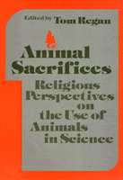

<body bgcolor="#FFFFFF" text="#000000" link="#0000FF" vlink="#CC0000" alink="#CC0000"><center><hr width="350" size="1" align="center" noshade>Presents the teachings of the major religions of the world concerning animals and their use in science<hr width="350" size="1" align="center" noshade><p><a href="https://cdcshoppingcart.uchicago.edu/Cart/ChicagoBook.aspx?ISBN=9780877224112&&PRESS=temple" target="_top">Buy this book!</a> | <a href="https://cdcshoppingcart.uchicago.edu/Cart/Cart.aspx?PRESS=temple" target="_top">View Cart</a> | <a href="https://cdcshoppingcart.uchicago.edu/Cart/Cart.aspx?PRESS=temple" target="_top">Check Out</a></p><p></p></center><!--none//--><h1>Animal Sacrifices</h1>
<H2>Religious Perspectives on the Use of Animals in Science</H2>
<h3>edited by Tom Regan, introduction by John Bowker</h3>
<P>cloth 0-87722-411-0 $34.95, Jun 86, <FONT COLOR=#990033>Out of Print</FONT>
<br>paper 0-87722-511-7 $29.95, May 88, <FONT COLOR=#990033>Available</FONT>
<br>Electronic Book 1-43990-701-3 $29.95 <FONT COLOR=#990033>Out of Print</FONT>
<BR> 288 pp
</P><BLOCKQUOTE><I>"This is a challenging and impressive book raising important ethical questions with uncommon force and clarity."</I>
<br>&#151<b><I>Ethics</I></b><I></I></BLOCKQUOTE>
<p>The issues of animal rights and the use of animals in scientific experimentation are fraught with controversy. In an effort to define the bases of such strong emotional response towards an ethical issue, this book presents the teachings of the major religions of the world concerning animals and, more specifically, their use in science. Judaism, Christianity, Islam, Hinduism, Jainism, Buddhism, and Confucianism are represented in this collection of eight essays by religious authorities.
<p>Scriptural writings, written and oral tradition, law, religious parables, and even folklore are used to illustrate the position of each religion on this question. When there are no specific teachings regarding the relatively recent use of animals in scientific research, conclusions are derived from the view of man’s relations with the rest of the world.
<p>In addition to the essays dealing with specific religions, there is also a chapter detailing recent uses of animals in scientific research throughout the world. It is estimated that 500 million animals a year are sacrificed to science. This volume attempts to find out for what purposes they are used, under what conditions, and with what legal protection.
<p>Based on a conference which explored the views of religion toward scientific experimentation on animals, this collection of essays addresses an explosive issue from a number of different perspectives. <I>Animal Sacrifices</I> is a fair-minded and informative discussion of a contemporary ethical dilemma.
<BR>&nbsp;<h2>Reviews</h2>
<p><I>"</I>Animal Sacrifices<I> is a riveting volume.... This latest work carries on Regan’s high standard of scholarship and readability.... Lucid, accessible, and thought provoking. This book is really a page-turner, for ones curiosity is quickly piqued by the stands religions&#151which most of us only vaguely understand&#151have taken on this issue."</I>
<br>&#151<b>Judge Lisa A. Richette</b>, <I>The Catholic Standard and Times</I>
<p><I>"The first of its kind.... [This book) is in line with an important trend in the field of religious ethics."</I>
<br>&#151<b>Thomas L. Benson</b>, St. Andrews Presbyterian College
<BR>&nbsp;<H2>About the Author(s)</H2>
<table><tr><td valign="top"><img src="/tempress/authors/426_au1.gif" height="90" width="75"></td><td width="100%" valign="middle"><p><b>Tom Regan</b>, Professor of Philosophy at North Carolina State University is the author of <I>Bloomsbury’s Prophet: G. E. Moore and the Development of His Moral Philosophy</I>, and the editor of <I><a href="398_reg.html" target="_top">Health Care Ethics</a></I> (with Donald VanDeVeer), <I><a href="456_reg.html" target="_top">G. E. Moore: The Early Essays</a></I>, <I>Just Business</I>, <I>Earthbound</I>, and <I>Matters of Life and Death</I> (all published by Temple).</P></td></tr></table>
<P>Contributors: John Bowker, Sidney Gendin, Rabbi Dr. J. David Bleich, Andrew Linzey, James Gaffney, Al-Hafiz, B. Z. Masri, Basant K. Lal, Christopher Chapple, Rodney L. Taylor, and the editor.</P>
<BR><H2>Subject Categories</H2>
<p><A HREF="/tempress/philosophy.html" TARGET="_top">Philosophy and Ethics</a>
<BR><A HREF="/tempress/religion.html" TARGET="_top">Religion</a>
</p>
<BR><h2 class="inpageheading">In the series</H2>
<P><I><a href="http://www.temple.edu/tempress/ethics_action.html" onMouseOver="window.status='Click for other books in this series!'; return true;" onMouseOut="window.status=''; return true;" target="_top">Ethics and Action</a></i>, edited by Tom Regan.
</p><p>No longer active.</p>
<p align="center"><a href="https://cdcshoppingcart.uchicago.edu/Cart/ChicagoBook.aspx?ISBN=9780877224112&&PRESS=temple" target="_top">Buy this book!</a> | <a href="https://cdcshoppingcart.uchicago.edu/Cart/Cart.aspx?PRESS=temple" target="_top">View Cart</a> | <a href="https://cdcshoppingcart.uchicago.edu/Cart/Cart.aspx?PRESS=temple" target="_top">Check Out</a></p><p><font face="Arial" size="1"><a href="copyright.html" onMouseOver="window.status='Web Copyright Policy';return true;" onMouseOut="window.status=''" title="Web Copyright Policy">&copy;</a> 2015 <a href="http://www.temple.edu" target="new" onMouseOver="window.status='Link to Temple University home page';return true;" onMouseOut="window.status=''" title="Link to Temple University home page">Temple University</a>. All Rights Reserved. http://www.temple.edu/tempress/titles/426_reg.html</font></p>